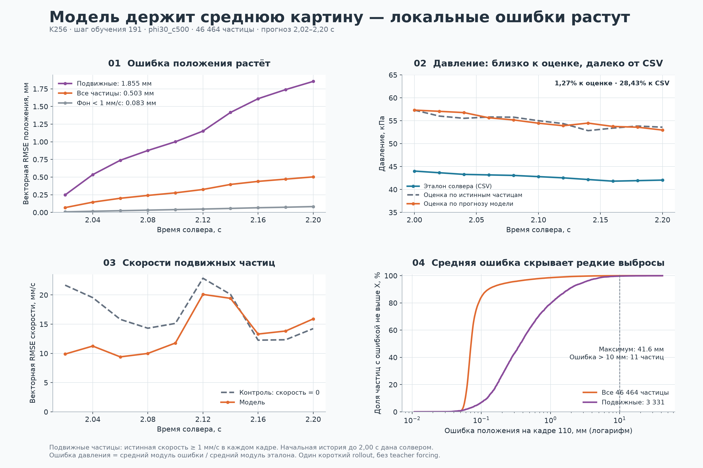
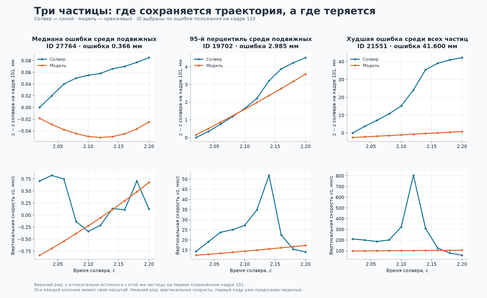
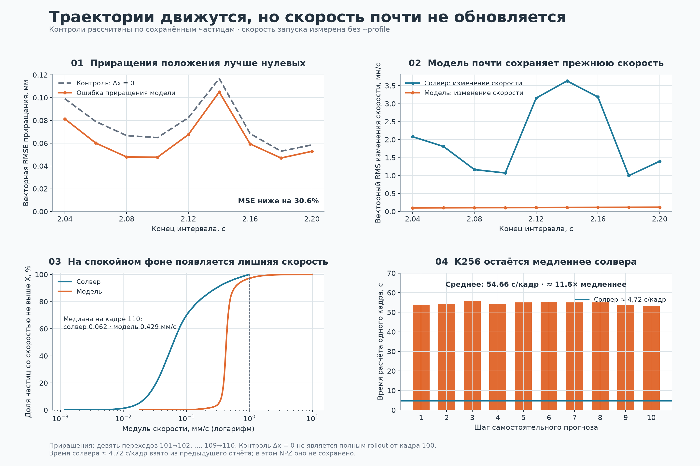
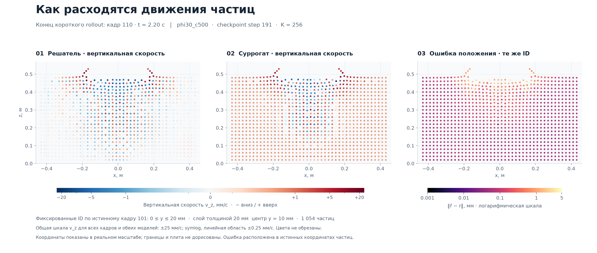
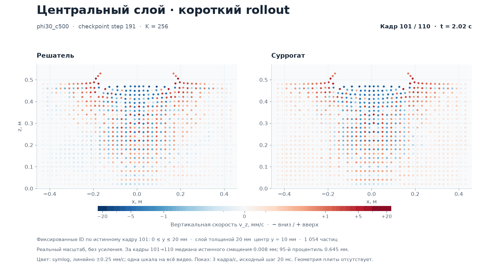

Что модель уже повторяет,
а где теряет движение
На коротком прогнозе средняя ошибка положения невелика. Но скорости обновляются слабо, в спокойном грунте появляется дрейф, а редкие быстрые движения пропускаются.
K256 · checkpoint 191 · phi30_c500 · 46 464 частицы · 0,20 с после истинного старта

Конечный кадр 110
| Показатель | Значение |
|---|---|
| RMSE положения, все частицы | 0.503 мм |
| RMSE положения, подвижные | 1.855 мм |
| 95-й / 99-й перцентиль ошибки положения | 0.250 / 1.421 мм |
| Максимальная ошибка положения | 41.60 мм |
| Частиц с ошибкой больше 10 мм | 11 |
| RMSE скорости модели / контроль v = 0 | 4.287 / 3.817 мм/с |
| Медиана скорости спокойного фона, модель / солвер | 0,429 / 0,062 мм/с |
Что именно проверяем
Это прежняя модель K256, checkpoint 191, материал phi30_c500. В файле 46 464 частицы и 10 предсказанных кадров: 101–110, время 2,02–2,20 с. Сеть получила истинную историю до кадра 100 (2,00 с), затем использовала собственный прогноз грунта. Известное движение границ продолжает задаваться извне.
Таким образом, проверено только 0,20 с самостоятельного прогноза: первые две секунды модель здесь не моделировала. По присланному журналу завершено 191 из 3927 обновлений — 4,86% первой эпохи; это ещё ранний результат. Нового K32 в этом архиве нет.
0,503 мм в среднем скрывают редкие большие ошибки
В конце окна векторная RMSE положения всех частиц равна 0.503 мм. Для подвижных частиц она уже 1.855 мм. Подвижность определена только по истинной скорости: не меньше 1 мм/с в рассматриваемом кадре. 92.59% всех пар «частица–кадр» не достигают этого порога. Усреднение по всем частицам уменьшает видимую величину ошибки активной области; при этом именно подвижные частицы дают около 98% суммы квадратов ошибок положения на всём окне.
У половины частиц конечная ошибка не больше 0.071 мм, у 95% — 0.250 мм, у 99% — 1.421 мм. Но максимум составляет 41.60 мм; 11 частиц превышают 10 мм. Строка терминала «10/10 до порога 10 мм» относится к общей RMSE, а не к каждой частице.
Худшая частица — ID 21551. Между кадрами 101 и 110 её истинный z вырос на 42,20 мм, предсказанный — на 3,35 мм. Здесь большая ошибка отражает пропущенное быстрое движение эталона; она сама по себе не означает, что модель разбрасывает весь грунт. Три примера на графиках выбраны по явному правилу: медиана и 95-й перцентиль ошибки среди подвижных частиц, затем максимум среди всех.

Модель слабо обновляет скорость
Прогноз не равен нулевому движению. На девяти доступных переходах 101→102, …, 109→110 ошибка приращений положения по MSE на 30,59% ниже контроля Δx = 0. Но это диагностика изменений между кадрами, а не доказательство превосходства полного rollout над частицами, замороженными в момент старта.
RMS собственных изменений скорости модели — 0.111 мм/с за переход, у солвера — 2.270 мм/с. Модель почти переносит скорость из предыдущего кадра. Ошибка изменения скорости по MSE на 0.51% хуже контроля Δv = 0.
На последнем кадре RMSE скорости всех частиц — 4.287 мм/с. Простой прогноз v = 0 даёт 3.817 мм/с: MSE модели выше на 26.15%. Для подвижной области результат тоже хуже нулевой скорости: 15,900 против 14,239 мм/с. Это относится к концу окна; в среднем по всем десяти кадрам модель ещё лучше этого простого контроля.
Появляется и лишняя скорость на спокойном фоне. Среди частиц с истинной скоростью меньше 1 мм/с на кадре 110 медиана модуля скорости равна 0,062 мм/с у солвера и 0,429 мм/с у модели. На пространственном срезе этот дрейф виден как положительный фон вертикальной скорости. Причину по одному rollout установить нельзя; проверка на истинной истории поможет отделить локальную ошибку от накопления ошибок.

Срез грунта: одинаковые ID и шкалы
Показан фиксированный слой 0 ≤ y ≤ 20 мм по истинному кадру 101: 1054 частицы. Слева истинная вертикальная скорость, в центре прогноз, справа ошибка положения. Одинаковая цветовая шкала показывает положительный дрейф модели на почти спокойном фоне.
{kind=link}

Посмотреть анимацию среза: солвер и модель рядом

{kind=link}
Давление: 1,27% к оценке, 28,43% к кривой солвера
p_pred и p_gt вычислены одной приближённой формулой: минус среднее напряжение p33 частиц в диске радиуса 0,15 м и слое толщиной 0,04 м под плитой. В первом случае используются предсказанные частицы, во втором — истинные. p_reference — отдельная кривая давления из CSV солвера. Она не является лабораторным измерением.
Ошибка модели относительно оценки по истинным частицам — 1,272%, или 0,695 кПа MAE. Относительно сохранённой кривой солвера — 28,430%, или 12,126 кПа MAE. При этом сама формула на истинном грунте отличается от кривой на 28,047%. Даже до первого прогноза, в кадре 100, оценка равна 57,320 кПа, а CSV — 44,018 кПа.
Поэтому малые 1,27% показывают хорошее совпадение с конкретной оценкой по напряжениям. Они не означают точность итогового давления беваметра 1,27%. Источник расхождения формулы и CSV следует проверять отдельно; исходного CSV, данных плиты и их временного выравнивания в скачанном архиве нет.
Шесть компонент напряжения на последнем кадре имеют RMSE от 0,422 до 1,904 кПа. Однако MSE их приращений на 14.65% хуже контроля «напряжения не меняются». Близость абсолютных напряжений ещё не доказывает правильность динамики. Нулевые ошибки rho, pc, Ev и Sv здесь тривиальны: в эталоне rho = 1600, остальные три поля равны нулю на всём окне.
За 0,20 секунды процесса потрачено около девяти минут
Все десять шагов заняли 545.8 с вычислений. Основное среднее в CLI исключает первый шаг: 54.66 с/кадр. В архиве нет стадийного профиля: это запуск без --profile. Экспорт NPZ и построение картинки в это время не входят.
При ранее указанном времени солвера около 4,72 с/кадр текущий K256 примерно в 11,6 раза медленнее. Число 4,72 взято из контекста предыдущей проверки, а не из этого NPZ. Новый K32 ещё нужно измерить отдельно. По предыдущему сообщению обучение перед проверкой было остановлено; сам архив модель GPU и фоновую нагрузку не сохраняет.
Что проверять дальше
1. Сохранить этот результат как контроль K256. Для тех же весов, материала и кадров выполнить teacher forcing: каждый шаг получает истинную историю. Это покажет, насколько ошибки растут именно от использования собственного прогноза.
2. В следующую выгрузку добавить истинное состояние кадра 100. Тогда можно честно сравнить полный rollout с замороженным состоянием и постоянной начальной скоростью от одного и того же старта. Сейчас файл содержит частицы только с кадра 101; подменять начальный кадр нельзя.
3. Новый K32 сравнить на тех же окнах, с тем же горизонтом и шумом. Проверять не только среднюю ошибку: отдельно подвижные частицы, скорости, приращения напряжений, p99/max и давление относительно обеих сохранённых кривых. После короткой проверки нужны более длинные траектории и другие отложенные материалы.